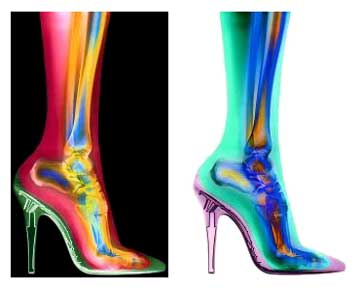

|
 
- - - - - - - - - -
Inside the Planet of the Women
If women ruled the world, there would be no war, and all women would be fat and happy. Right? Wrong.
- - - - - - - - - -
by Allen Voivod
 HE WORLD RULED BY WOMEN is a world of constant battle, of domination and submission. And the men - the poor, stooped men with sick faces and narrow ties like leashes - scurry from woman to woman to answer their demands, knowing that a sudden and terrible doom may befall them at any moment. This world is better known to some as the Women's Shoe Department during the Nordstrom Semi-Annual Women's Shoe Sale. HE WORLD RULED BY WOMEN is a world of constant battle, of domination and submission. And the men - the poor, stooped men with sick faces and narrow ties like leashes - scurry from woman to woman to answer their demands, knowing that a sudden and terrible doom may befall them at any moment. This world is better known to some as the Women's Shoe Department during the Nordstrom Semi-Annual Women's Shoe Sale.
Environment
My first priority upon arrival was to get an overview of the area. It was well-lit, which hampered the search for an observation post that would allow me to see the natives and not be seen by them. I managed to find a camouflaged spot nearby a male playing a keyboard instrument for the amusement of the natives, and I began my study in earnest.
Over 5,000 pairs of shoes were on display. Indeed, the sheer variety was overwhelming. Already, I began to marvel at the analytical skills which a female must possess in order to evaluate so many choices.
Curiously, the wall displays included mannequins of adult and adolescent female torsos. The torsos seemed to serve no practical purpose, as they did not also have the connected appendages upon which shoes would be placed. I concluded that this was some fetishistic display, or an idolatrous expression of worship.
The shoe service males (there were no females) often returned to a "Den" where the supply was kept, and no one else entered there. One might think that the females would prefer to have direct access to the shoes. Rather, they seemed to prefer the display of selected shoe "Avatars," and relegated the shoe service males to retrieving the appropriate size and shape. The Den, then, must have been enormous to contain multiple copies of the different shapes and sizes for the thousands of Avatars on display.
The shoes themselves were named, and the naming appeared to be related to a caste or class system. Shoes that looked similar to the untrained eye had different names and commanded different prices. I wondered whether the names were a subset of an existing communication system or a separate one altogether. Although I intended to avoid interacting with the native populace, here I could not help myself. I emerged from my observation post and carefully approached a service male. As I approached, however, he looked around nervously and moved away. I tried once more, but again he moved away, with greater purpose and speed. Rather than continue to pursue him, and possibly alert other natives to my presence, I returned to my post and stayed there for the remainder of my study. I wondered whether it was forbidden for the service males to be seen talking to other unattached males in public.
In the midst of all this, there was a special station set up for the final acquisition of shoes. There, the females self-organized into a queue which determined the order in which they could conduct their transaction.
Subjects
The female subjects came from a diverse cross-section of ages and body types. Some of these females were accompanied by their offspring and personal service males; others were not. Some foraged in packs; others foraged alone. Despite the variations among females, one thing was nearly universal - the garment each female wore on the lower half of her body was made of a fabric called "denim." Perhaps this was the traditional garment against which shoes were evaluated; perhaps it was a template, which might be applied to other garments via some unknowable imaginative capacity.
The shoe service males fell into one of three categories. One class (which I'll refer to as "Primary") was allowed to interact with the females and bring them shoes from the Den. These males frequently demonstrated their supplication to the females by kneeling at their feet to assist them with their shoe selections. Another class ("Secondary") was not allowed to interact with the females. Likewise, the females did not seem to even acknowledge their presence. These males were relegated to collecting unwanted shoes and returning them to the Den. A third class (which I'll call "Station") was designated to occupy the special station for the final acquisition of shoes.
 Next page | The Primaries also carried silver wedge-shaped blades Next page | The Primaries also carried silver wedge-shaped blades
1, 2, 3
|